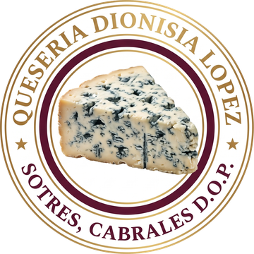
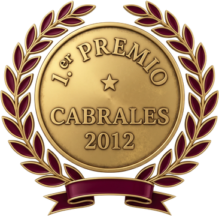
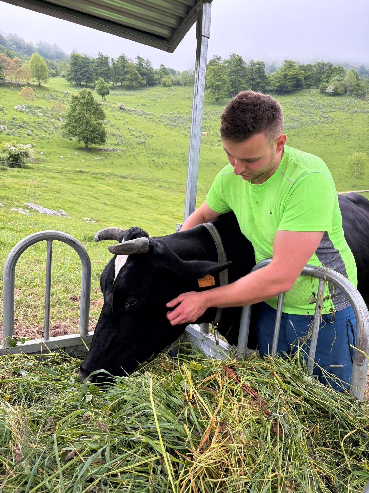
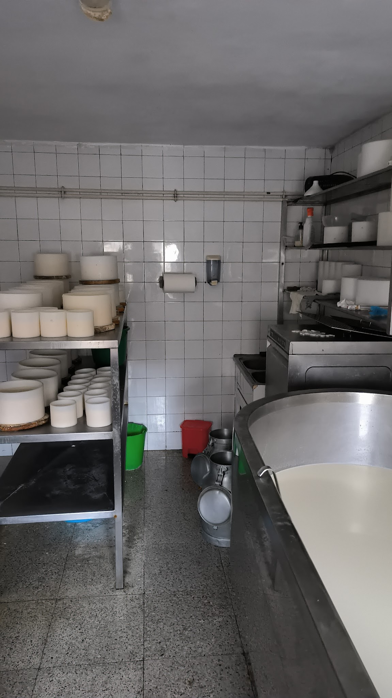
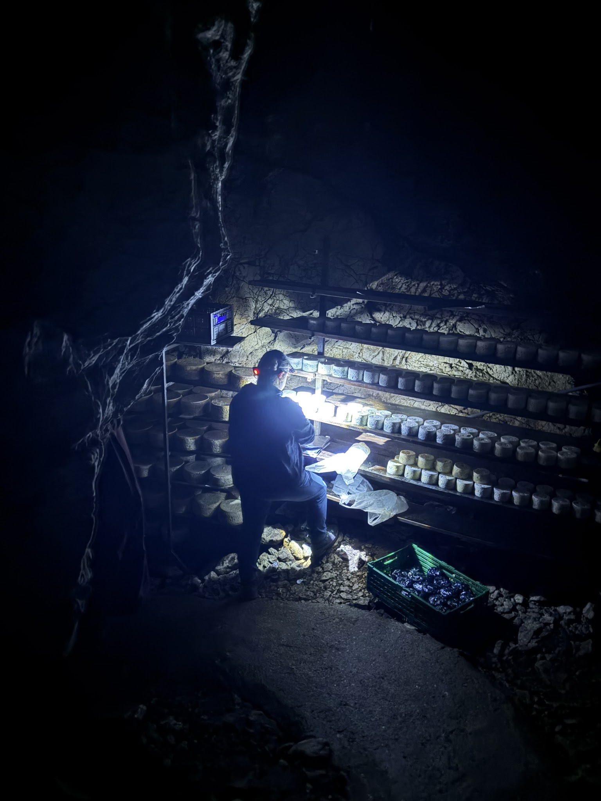
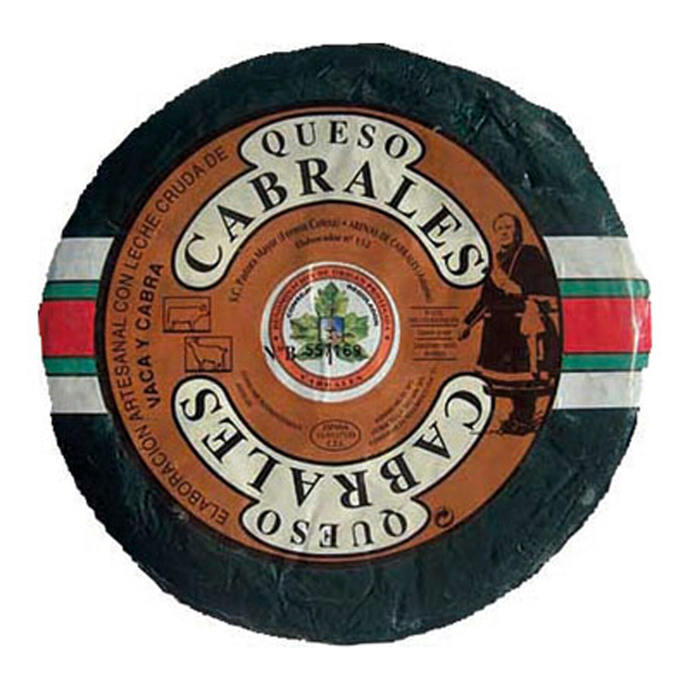
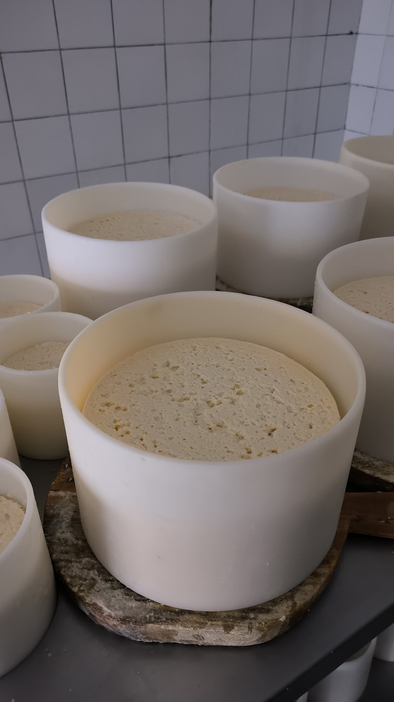
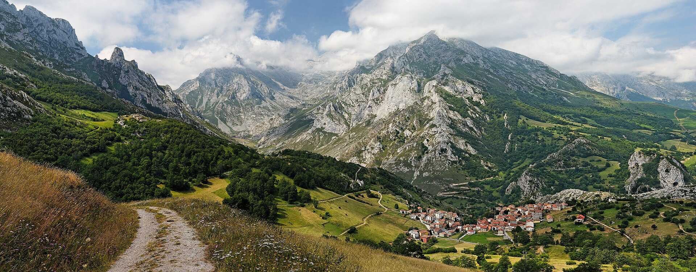

Leche cruda, elaboración artesana y maduración en cueva natural. En Sotres, el pueblo más alto de los Picos de Europa.
Cómo llegar · Sotres«Aquí el queso se hace despacio: leche de nuestra tierra, las manos de siempre y una cueva que hace el resto. No hay atajos en el Cabrales.»
En Sotres, a más de 1.000 metros entre las cumbres de los Picos de Europa, la Quesería Dionisia López elabora Queso de Cabrales como se ha hecho durante generaciones: con leche cruda de la zona, cuajado lento y maduración en cueva de montaña.
Cada queso lleva el trabajo de toda una familia y el sabor inconfundible de una tierra única en el mundo. Un Cabrales con nombre y apellido, no de fábrica.

Trabajamos la leche cruda recién ordeñada en la propia quesería. Se cuaja, se corta y se llena el molde a mano, pieza a pieza. Después, cada queso reposa, se sala y escurre antes de bajar a la cueva.
Mezcla de vaca, cabra y oveja de la zona, sin pasteurizar, para conservar todo el sabor.
Cuajado lento y llenado del molde a mano, uno a uno, sin maquinaria de serie.
Tras salar y escurrir, el queso baja a madurar a la cueva natural de montaña.


Lo que hace único al Cabrales no se compra: es la cueva natural. En su oscuridad húmeda y fría, el aire de la montaña deja crecer el característico veteado azul-verdoso del queso, despacio, durante meses.
Bajamos cada pieza a la cueva y la cuidamos a mano, volteándola y vigilándola hasta su punto justo. Ninguna cámara industrial puede imitar lo que hace esta montaña.
Queso con Denominación de Origen Protegida, vendido directamente desde la quesería. Sin intermediarios: del productor a tu casa.

La pieza completa, envuelta y certificada con la D.O.P. Cabrales. Intenso, cremoso y con el veteado azul natural de la cueva.
Por dentro, una pasta untuosa surcada de vetas azul-verdosas: potente y persistente, perfecta para tabla, sidra o salsas.

De la leche cruda al molde en la propia quesería. Producción limitada y cuidada, no de cadena industrial.
Escríbenos o llámanos y te preparamos tu pieza. Envío a toda España con transporte refrigerado para que llegue en su punto. Pregúntanos también por encargos para tienda, restaurante o regalo.
Sotres es el pueblo más alto de Asturias y una de las puertas de los Picos de Europa: senderismo, el mítico Naranjo de Bulnes y la verdadera ruta del queso. Acércate a la quesería, conoce cómo se hace el Cabrales y llévate el tuyo recién sacado de la cueva.

Venta de Queso de Cabrales D.O.P. · Producción artesana